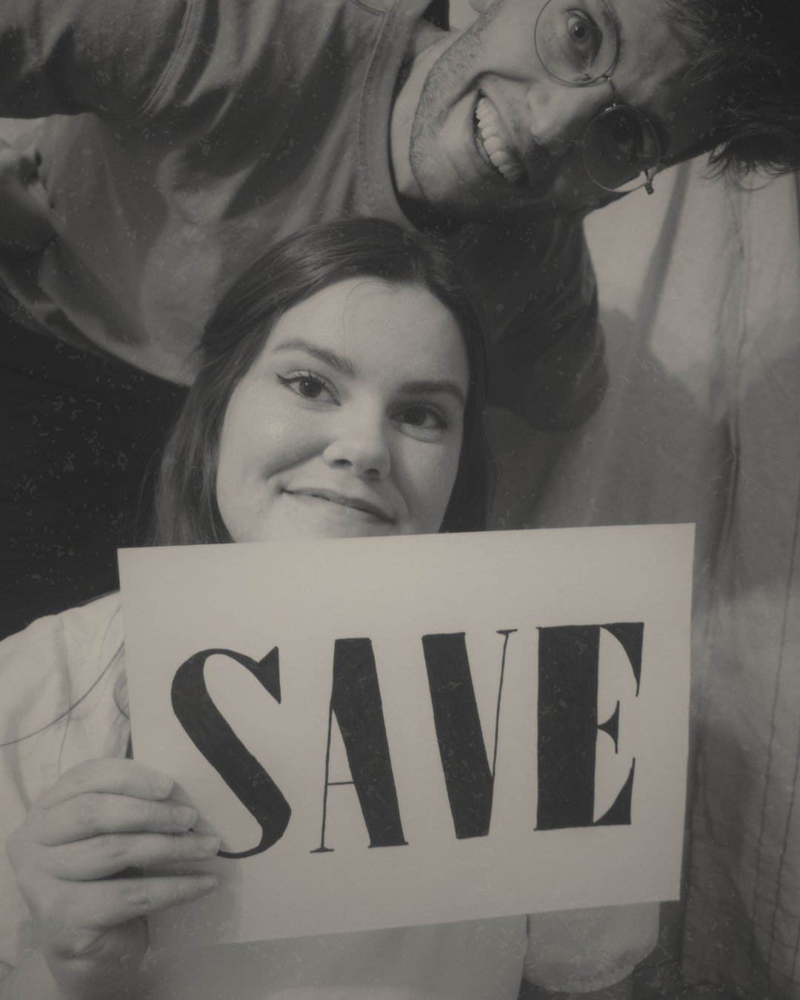
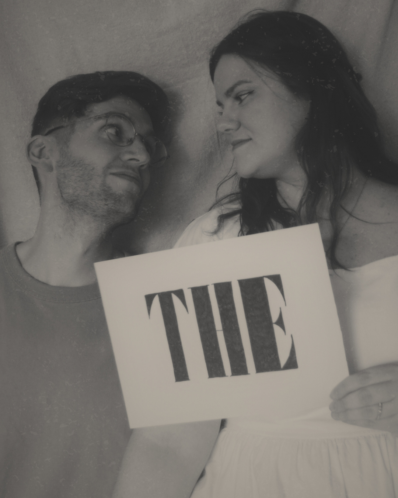
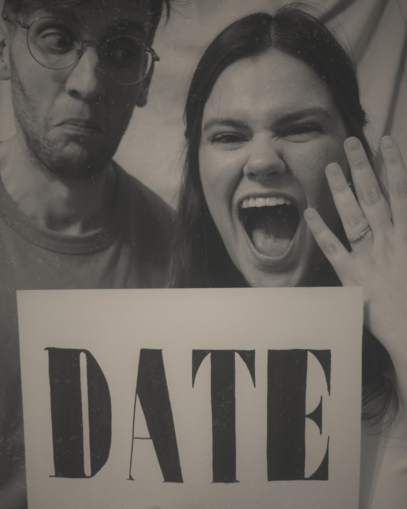
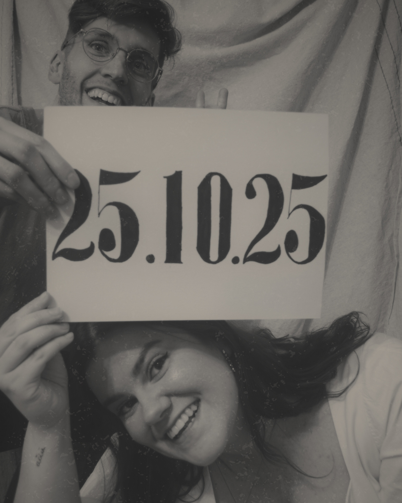

Nos casamos




25.10.2025
Únete a nosotros para celebrar nuestro día más especial en El Palacio de Esquileo.
Sábado 25 de Octubre
1pm
Celebra nuestra unión con una ceremonia por todo lo alto.2pm
¡Es la hora del cocktail y el cuerpo lo sabe!3-30pm
Una comida digna de una celebración así.7pm hasta 11pm
¡Que el ritmo no pare, no pare no!Después de 10 años de amor, por fin hemos dado el gran paso. Pero lo que muchos no saben es que nuestra historia comenzó mucho antes… cuando apenas teníamos 5 años.
Desde la escuela infantil compartimos clase, y aún conservamos ese recuerdo mágico de una visita al Museo del Ferrocarril. Sin saberlo, el destino ya nos daba pequeñas señales de que nuestras vidas estaban entrelazadas.
Pasaron los años, y fue en 3º de la ESO cuando el destino volvió a cruzar nuestros caminos. Las matemáticas no eran lo mío, pero Javi, con su infinita paciencia, se ofreció a ayudarme. Lo que empezó como una simple clase, fue el primer paso de algo mucho más grande.
Los años pasaron, y podéis llamarlo destino… o estrés por 2º de Bachillerato, pero el 29 de marzo de 2015 nos armamos de valor y dimos el primer paso: empezamos a salir juntos.
Después vino un año y medio de relación a distancia entre Vilnius, Orlando y Londres, muchos altibajos, una pandemia de por medio y, sobre todo, muchas lecciones para aprender a querernos más cada día… hasta que al fin comenzamos a vivir juntos.
Creamos nuestro hogar, adoptamos a nuestras dos gatitas, Lexa y Rory, y hasta sobrevivimos a ser Presidentes de Comunidad (sí, una verdadera prueba de fuego)
Hoy hemos visitado más de 10 países, hemos compartido más de 2300 días juntos… y aún sentimos la misma ilusión que el primer día y celebramos el poder seguir disfrutándonos.
Alojamiento
Sí, lamentablemente el Palacio de Esquileo no dispone de alojamiento para todos los invitados. Hemos reservado todo el hotel dónde se realiza la celebración para nuestros invitados más cercanos. Estas habitaciones se han repartido según necesidad.
Sotos de Sepulveda se encuentra cerca de localidades con más hospedaje como es Riaza. A continuación os dejamos una lista de hoteles dónde podéis alojaros a tan solo 10/15 minutos del lugar de celebración.
Transporte
??????????????Por favor en la medida en la que os sea posible rellenad este formulario